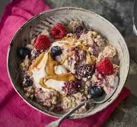

Over Night Oats
Homepage

Description
Using a high-protein drink like Premier Protein® Salted Caramel and gingerbread morphs this regular overnight oats into the flavors of fall. I find adding the spices overnight dilutes the flavors, so I suggest waiting to add most of the spices before serving.
ingredients
- 1 tablespoon butter
- ¼ pear, chopped
- 2 tablespoons chopped walnuts
- ½ teaspoon ground cinnamon, divided
- 6 ounces caramel-flavored protein shake (such as Premier Protein®)
- ½ cup rolled oats
- 2 teaspoons pumpkin pie spice
- ½ teaspoon ground ginger
Steps:
Melt butter in a small pan over medium heat. Saute pear, walnuts, and 1/4 teaspoon cinnamon until pear softens, about 5 minutes. Remove from heat and let cool.
Combine protein drink and oats in a small Mason jar. Mix in cooled pear and walnuts. Seal and refrigerate, 8 hours to overnight.
Add pumpkin spice, ginger, and remaining cinnamon to the oats the following morning. Stir to combine.